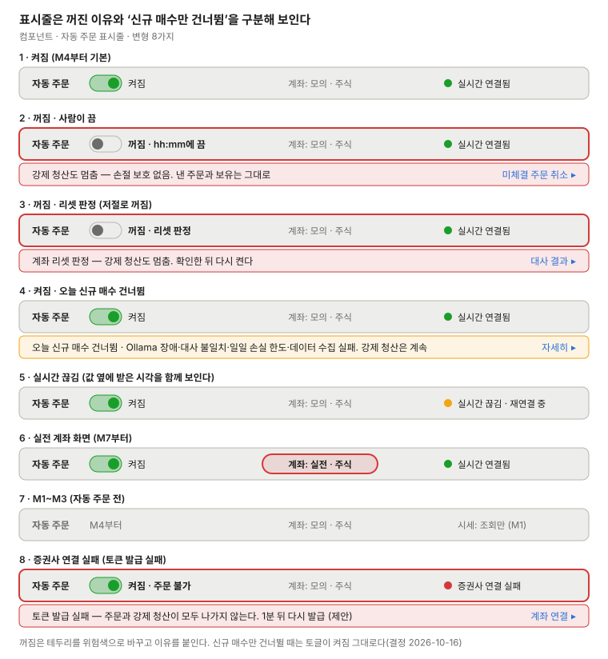

자동 주문 표시줄
모든 화면 위에 고정하는 띠로, 자동 주문이 켜졌는지와 꺼졌다면 왜 꺼졌는지, 이 화면의 계좌, 실시간 연결을 보인다. 켜기·끄기 하나로 구현한다(결정 2026-10-16).

| 변형 | 토글 | 띠 | 링크 |
|---|---|---|---|
| 켜짐 | 켜짐 | 없음 | — |
| 꺼짐 · 사람이 끔 | 꺼짐 | 위험: 강제 청산도 멈춤 | 미체결 주문 취소 |
| 꺼짐 · 리셋 판정 | 꺼짐(저절로) | 위험: 확인한 뒤 다시 켬 | 대사 결과 |
| 오늘 신규 매수 건너뜀 | 켜짐 | 경고: 이유(Ollama 장애·대사 불일치·일일 손실 한도·데이터 수집 실패) | 이유에 맞는 화면 |
| 실시간 끊김 | 그대로 | 없음. 값 옆에 받은 시각 | — |
| 실전 계좌 화면(M7) | 그대로 | 계좌 칸을 위험색으로 | — |
| M1~M3 | 없음(M4부터) | 없음 | — |
| 증권사 연결 실패(토큰 발급 실패) | 켜짐 · 주문 불가 | 위험: 주문과 강제 청산이 모두 나가지 않음 | 계좌 연결 |
- 끄기·켜기는 확인 대화상자를 거친다. 다시 켤 때는 켜지는 즉시 나갈 강제 청산 목록을 보인다(frontend.md 제안)
- M1은 실시간 시세가 없어 연결 자리에 "시세: 조회만"을 보인다. M2부터 실시간 연결 상태를 보인다
- 끈 시각은 표시줄에 "hh:mm에 끔"으로 보인다. 변형 8(증권사 연결 실패)과 데이터 수집 실패 이유는 2026-10-18 결정으로 더했다